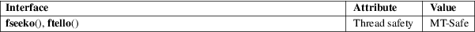

fseeko, ftello − seek to or report file position
Standard C library (libc, −lc)
#include <stdio.h>
int
fseeko(FILE *stream, off_t
offset, int whence);
off_t ftello(FILE *stream);
Feature Test Macro Requirements for glibc (see feature_test_macros(7)):
fseeko(),
ftello():
_FILE_OFFSET_BITS == 64 || _POSIX_C_SOURCE >= 200112L
The fseeko() and ftello() functions are identical to fseek(3) and ftell(3) (see fseek(3)), respectively, except that the offset argument of fseeko() and the return value of ftello() is of type off_t instead of long.
On some architectures, both off_t and long are 32-bit types, but defining _FILE_OFFSET_BITS with the value 64 (before including any header files) will turn off_t into a 64-bit type.
On successful completion, fseeko() returns 0, while ftello() returns the current offset. Otherwise, −1 is returned and errno is set to indicate the error.
See the ERRORS in fseek(3).
For an explanation of the terms used in this section, see attributes(7).

POSIX.1-2008.
glibc 2.1. POSIX.1-2001, SUSv2.
The declarations of these functions can also be obtained by defining the obsolete _LARGEFILE_SOURCE feature test macro.
fseek(3)